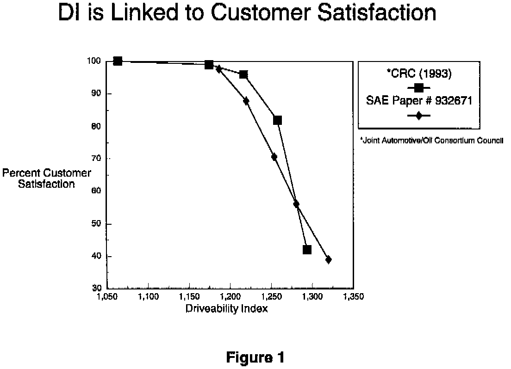
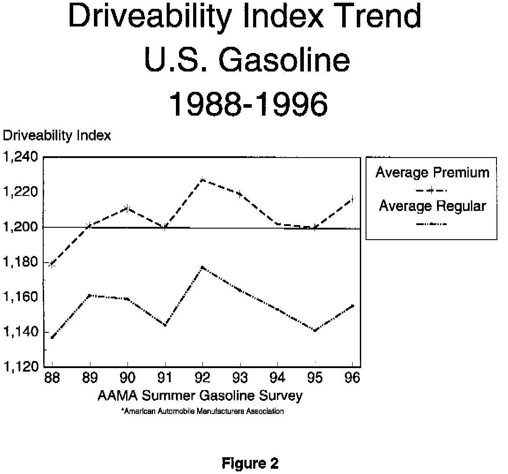

Engine - High Driveability Index Fuels
NO: 14-08-97GROUP: Fuel
DATE: Nov. 21, 1997
SUBJECT:
Poor Driveability With High DI (Driveability Index) Fuel
MODELS:
1996 - 1998 (AB) Ram Van/Wagon
1996 - 1998 (AN) Dakota
1996 - 1998 (BR/BE) Ram Truck
1998 (DN) Durango
1996 - 1998 (FJ) Sebring/Avenger/Talon
1996 - 1998 (JA) Cirrus/Stratus/Breeze
1996 - 1998 (JX) Sebring Convertible
1996 - 1998 (LH) Concorde/Intrepid/LHS/New Yorker/Vision
1996 - 1998 (NS) Town & Country/Caravan/Voyager
1996 - 1998 (PL) Neon
1997 (PR) Prowler
1996 - 1998 (SR) Viper Roadster/Coupe
1997 - 1998 (TJ) Wrangler
1996 - 1998 (XJ) Cherokee
1995 - 1998 (ZJ) Grand Cherokee
SYMPTOM/CONDITION:
Long cold start times, warm-up sags, hesitations, and driveway die outs. These symptoms are most noticeable and severe at moderate ambient temperatures between 4 - 27 degrees C (40 - 80 degrees F).
DISCUSSION:
Gasoline with a high Driveability Index (DI) can cause the above described symptoms. DI is a measure of the gasolines total volatility, or tendency to vaporize completely. A high DI number is less volatile than a low DI number. Most premium gasoline sold in the U.S. has a higher (worse) DI index than regular or mid-grade gasoline. Use of premium gasoline is NOT recommended for vehicles designed to run on 87 (R+M)/2 regular or 89 (R+M)/2 midgrade gasoline. High DI gasolines also cause higher emissions for the same reasons they cause driveability problems.
For vehicles that require an octane rating of 91 (R+M)/2, premium is recommended, or possibly required. Using premium fuel with a higher than recommended octane rating is not recommended. Owners who experience fuel related cold start and warm up driveability problems should try a gasoline with the recommended octane rating or different brands of gasoline until they find one that provides good performance.
The octane quality of gasoline is only a measure of its resistance to spark knock. The use of higher than recommended octane gasoline under normal operating conditions does NOT improve startability, idle quality, fuel economy, driveability, acceleration, engine durability, or emissions. In fact, most higher octane gasolines available in the U.S. have higher DI values than regular gasoline. Customers are most likely to experience poor driveability with premium gasoline than with regular.
Some vehicles, such as Viper, Prowler, 5.9L Grand Cherokee, 2.0L Turbo Talon, and 2.0L DOHC Neon have been specifically designed to take advantage of higher octane. These vehicles may have higher compression ratios, and/or more aggressive spark calibrations which provide optimum performance with the specified higher octane. However, other vehicles which are not specifically designed and calibrated to take advantage of higher octane will not benefit from higher octane.
Some vehicles may experience light spark knock in situations such as trailer towing or climbing steep sustained grades. Light knock or "ping" under these conditions is not harmful. However, if the customer is concerned about light knock under these circumstances, the use of 89 (R+M)/2 or even 91 (R+M)/2 premium gasoline may be temporarily warranted. If a vehicle is experiencing heavy spark knock on gasoline with its designed octane rating, this may be an indication of excessive combustion chamber deposits, or some other problem. Combustion chamber deposits can be removed with Mopar Combustion Chamber Conditioner p/n 04318001. Standard diagnostic procedures may help in identifying other potential causes of excessive knock.
Some gasoline marketers may advertise that their premium gasoline contains extra detergent additives. Under provisions of the Clean Air Act, ALL gasoline sold in the U.S. must contain effective deposit control additives. Nevertheless, if fuel injector or intake valve deposits are suspected of contributing to poor performance, occasional use of Mopar Fuel Injector Clean Up p/n 04549613 is a much less expensive way to maintain engine cleanliness than regular use of premium gasoline.


The charts (Figures 1 & 2) show the negative effects of high DI fuel as related to customer satisfaction.
If fuel quality is suspected in causing a customers driveability concern, your zone technical office may be able to provide direction on procedures for fuel sample analysis.
POLICY: Information Only